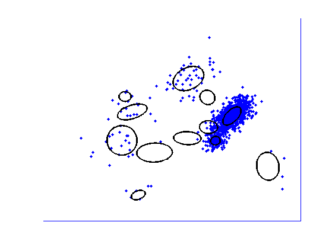
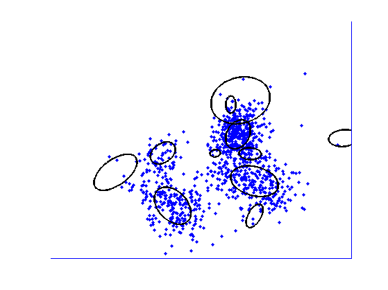

Contents
sample from a DP mixture of 2D gaussians
clear all
seeds = [2 3];
for trial=1:numel(seeds)
seed=seeds(trial);
setSeed(seed);
aa = 2;
nn = 1000;
sigma = 1*eye(2);
vsigma = 1;
dof = 10;
mu = zeros(2,1);
mv = 8*ones(2,1);
ax = 30;
Sample from CRP prior
T = [];
zz = zeros(2,nn);
for ii = 1:nn
pp = [T aa];
kk = sum(rand(1)*sum(pp) > cumsum(pp))+1;
if kk < length(T)
T(kk) = T(kk) + 1;
else
T(kk) = 1;
end
zz(ii) = kk;
end
Generate random parameters for each mixture component
mm = zeros(2,length(T));
vv = zeros(2,2,length(T));
for kk = 1:length(T)
mm(:,kk) = randn(2,1) .* mv + mu;
vv(:,:,kk) = sqrtm(wishrnd(sigma,dof)) * sqrt(gamrnd(vsigma,1));
end
Generate data from each component
xx = zeros(2,nn);
for ii = 1:nn
kk = zz(ii);
xx(:,ii) = vv(:,:,kk) * randn(2,1) + mm(:,kk);
end
Plot
bb = 0:.02:2*pi;
figure;
ss = [50 200 500 1000];
for jj = 1:length(ss)
sj = ss(jj);
hh = hist(zz(1:sj),1:max(zz(1:sj)));
cc = find(hh>=1);
hh(jj) = plot(xx(1,1:sj),xx(2,1:sj),'.','markersize',7);
hold on;
for kk = cc
uu = vv(:,:,kk);
circ = mm(:,kk)*ones(1,length(bb)) + uu*[sin(bb);cos(bb)];
plot(circ(1,:),circ(2,:),'linewidth',2,'color','k')
end
plot([-ax ax ax -ax -ax],[-ax -ax ax ax -ax]);
hold off
axis([-ax ax -ax ax])
axis off
N = sj;
drawnow
printPmtkFigure(sprintf('dpmSampleSeed%dN%d', seed, N))
end
 
end